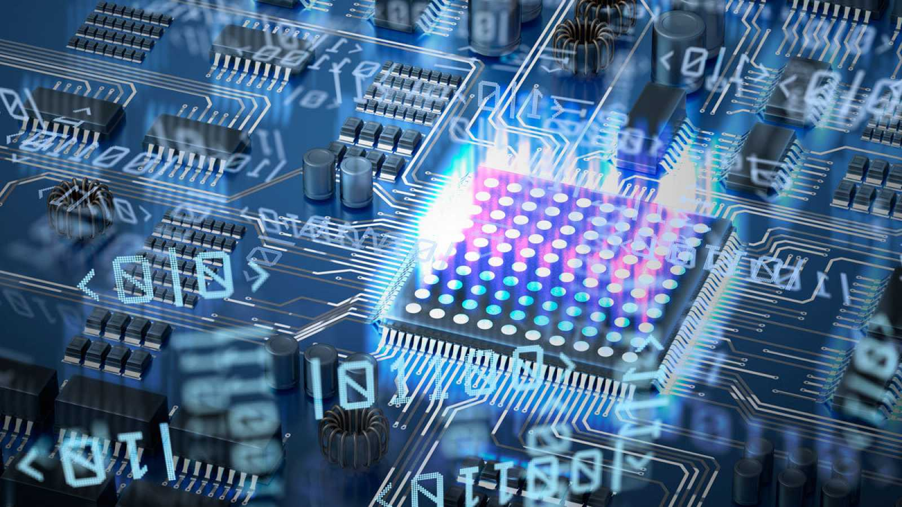

Inteligencia Artificial: El Futuro de la Computación
La inteligencia artificial está transformando la forma en que interactuamos con la tecnología. Desde asistentes virtuales hasta sistemas de recomendación, la IA se está integrando en cada aspecto de nuestra vida digital. Los avances en machine learning y deep learning están permitiendo que las computadoras realicen tareas que antes requerían inteligencia humana.

Computación Cuántica: Rompiendo Límites
La computación cuántica representa un salto monumental en la capacidad de procesamiento. Utilizando qubits en lugar de bits tradicionales, las computadoras cuánticas pueden realizar cálculos complejos en fracciones de segundo que tomarían años a las supercomputadoras actuales. Este campo emergente promete revolucionar la criptografía, la simulación molecular y la optimización de sistemas.

Seguridad Informática en la Era Digital
Con el aumento de ciberamenazas y ataques sofisticados, la seguridad informática se ha convertido en una prioridad crítica para individuos y organizaciones. Las técnicas de protección evolucionan constantemente, desde firewalls avanzados hasta sistemas de autenticación biométrica. Mantenerse actualizado con las mejores prácticas de seguridad es esencial en nuestro mundo hiperconectado.